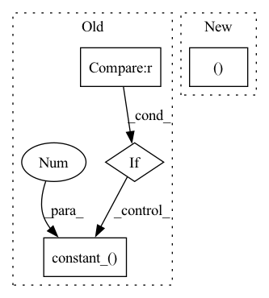

Pattern ID :22532
Before Change
if isinstance(m, nn.Conv2d):
nn.init.kaiming_normal_(m.weight, mode="fan_out", nonlinearity="leaky_relu")
m.weight.data *= 0.1
if m.bias is not None :
nn.init.constant_( m.bias, 0 )
elif isinstance(m, nn.Linear):
nn.init.kaiming_normal_(m.weight)
m.weight.data *= 0.1
nn.init.constant_(m.bias, 0)After Change
nn.LeakyReLU(negative_slope=0.2, inplace=True)
)
self.avgpool = nn.AdaptiveAvgPool2d((14, 14 ))
self.fc = nn.Sequential(
nn.Linear(512 * 14 * 14, 1024),In pattern: SUPERPATTERN
Frequency: 3
Non-data size: 4
Instances Fragment ID: 71205656
Project Name: lornatang/srgan-pytorch
Commit Name: 5cf838428d2fd83fd2fc39b794fdd8fb82ea91ed
Time: 2020-10-21
Author: liuchangyu1111@gmail.com
File Name: srgan_pytorch/model.py
M Class Name: Discriminator
N Class Name: Discriminator
M Method Name: __init__(1)
N Method Name: __init__(1)
M Parent Class: nn.Module
N Parent Class: nn.Module
M File Name: srgan_pytorch/model.py
N File Name: srgan_pytorch/model.py
M Start Line: 63
M End Line: 85
N Start Line: 63
N End Line: 69
Before Change
for m in self.modules():
if isinstance(m, nn.Conv2d):
nn.init.kaiming_normal_(m.weight, mode="fan_out", nonlinearity="leaky_relu")
if m.bias is not None :
nn.init.constant_( m.bias, 0 )
elif isinstance(m, nn.BatchNorm2d):
nn.init.constant_(m.weight, 1)
nn.init.constant_(m.bias, 0)
elif isinstance(m, nn.Linear):After Change
nn.LeakyReLU(negative_slope=0.2, inplace=True)
)
self.avgpool = nn.AdaptiveAvgPool2d((14, 14 ))
self.fc = nn.Sequential(
nn.Linear(512 * 14 * 14, 1024), Fragment ID: 71205653
Project Name: lornatang/esrgan-pytorch
Commit Name: 91405c6093508419a44d6313646c88ec681a90d2
Time: 2020-10-21
Author: liuchangyu1111@gmail.com
File Name: esrgan_pytorch/model.py
M Class Name: Discriminator
N Class Name: Discriminator
M Method Name: __init__(1)
N Method Name: __init__(1)
M Parent Class: nn.Module
N Parent Class: nn.Module
M File Name: esrgan_pytorch/model.py
N File Name: esrgan_pytorch/model.py
M Start Line: 63
M End Line: 83
N Start Line: 63
N End Line: 69
Before Change
if self.bias_i is not None:
nn.init.constant_(self.bias_i, 0)
if self.bias_o is not None :
nn.init.constant_( self.bias_o, 0 )
def forward(self, query, key=None, value=None, mask=None, **kwargs):
out, _ = F.multi_head_attention_forward(
query,After Change
self._p, self._bias))
def reset_parameters(self):
for m in (self.proj_q, self.proj_k, self.proj_v, self.proj_m ):
kaiming_init_(m)
def forward(self, q, k=None, v=None, mask=None): Fragment ID: 71205650
Project Name: yeliudev/nncore
Commit Name: ac206a2a8f9b247d3419c25b262f919e007dc092
Time: 2021-11-04
Author: yeliudev@outlook.com
File Name: nncore/nn/blocks/transformer.py
M Class Name: MultiHeadAttention
N Class Name: MultiHeadAttention
M Method Name: reset_parameters(1)
N Method Name: reset_parameters(1)
M Parent Class: nn.Module
N Parent Class: nn.Module
M File Name: nncore/nn/blocks/transformer.py
N File Name: nncore/nn/blocks/transformer.py
M Start Line: 64
M End Line: 79
N Start Line: 75
N End Line: 78